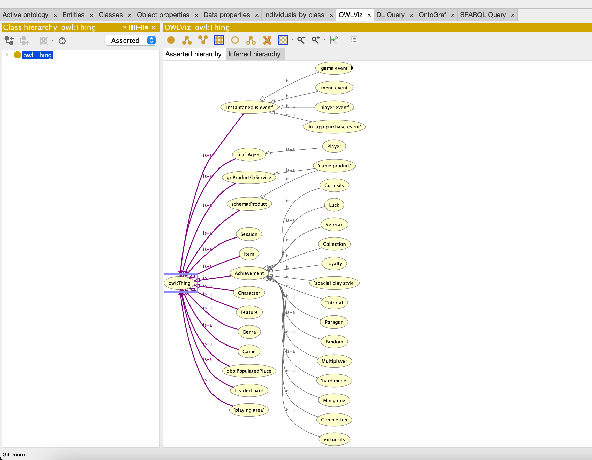
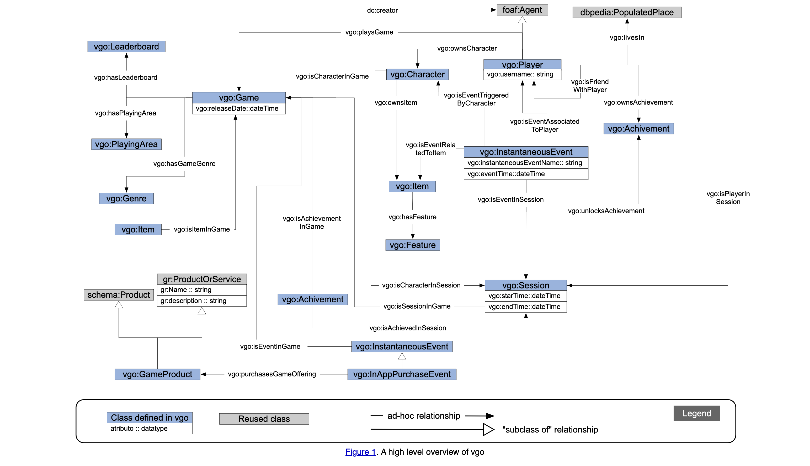
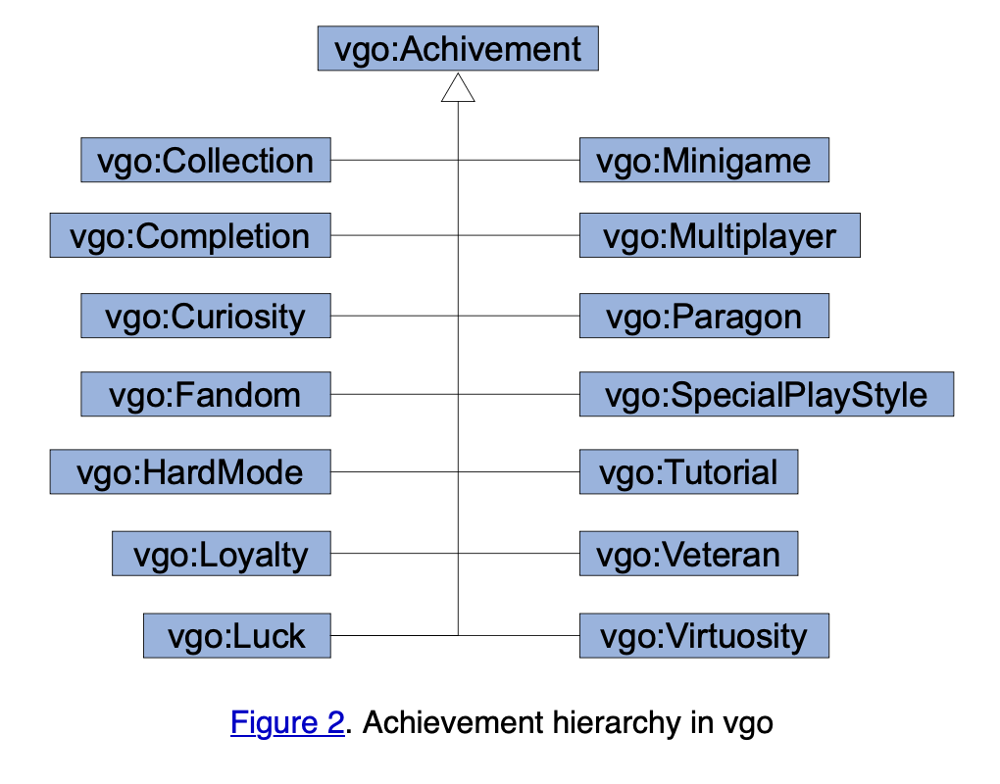

| クラス | 学籍番号 | 氏 名 |
|---|---|---|
| A | 20122077 | Roger Marvin |
AI実習2024A課題レポート(学籍番号)(学生氏名).md マークダウン記法とは？ Markdown 記法～基礎編～ マークダウン記法一覧 マークダウンの書き方
[^2]: (https://qiita.com/miriwo/items/28d80f46c857de49f34b) Markdown 記法～基礎編～ [^3]: (https://www.sejuku.net/blog/77398)マークダウン記法一覧 [^4]: (https://backlog.com/ja/blog/how-to-write-markdown/)マークダウンの書き方
<!-- 要 記述 回答 --> と記されている箇所は忘れずに適切な記述を加筆するOWL/XML Syntax 形式で、file名.owl として保存するRDF/XML Syntax 形式で、file名.owl と保存する Sparqlのクエリコードを ```sql と ``` で囲み、クエリの実行結果も ``` ``` で囲む
2 学年 4 学期のAPI 実習と同じ方法
Github のアカウントを作成し、Practice-AI-2024 という名称でプライベートリポジトリを作成
そのプライベートリポジトリに、指導員の Github アカウント= keythriveを招待する
Github のプライベートリポジトリに次の名前で、6 つフォルダを用意する：
Github のアカウント名、プライベートリポジトリ作成、6 つのフォルダをつくったか？招待を完了したか？について、FORMS アンケートするので必ず回答すること。
FORMS アンケートはこちら：
FORMS アンケートに未回答の場合、レポートを取得する方法が確立しないので、必ず回答のうえレポート提出可能な状態にすること
それぞれの提出期限までに、必要なファイル一式を当該フォルダにアップロードしておく
〆切時刻を過ぎた時点で自動的に, 全員の Github プライベートリポジトリから、git cloneなどでファイルを一括ダウンロードする
提出が遅れるとダウンロードできず、未提出と判断される
真に止むを得ない事由で、提出期限が遅れる場合、事前にメールにて連絡・相談すること:
mailto: horikawa.keitaro@kaishi-pu.ac.jp
事前連絡なしに、期限を過ぎた場合、その課題レポートは未提出として採点しない
Github のアカウント登録、プライベートリポジトリ、ファイルアップロードが不明な場合は、必ず事前に確認・相談するか、すでに出来ている友達から教えてもらうこと
| 回数 | グループ名 | 発表者 | 発表内容 | 発表への質疑・コメント |
|---|---|---|---|---|
| 4 | 一念通天 | 加藤 颯士 | このチームはトリコのアニメや漫画のXMLについて発表しました。このXMLはトリコのキャラのフルコースというタグでキャラの食べるコーズの情報が載っています。しかし、XMLの書き方はちょっとおかしいと思います。キャラの名前は＜名前＞のタッグではなくて、そのキャラの名前をそのままタッグとして使っています。 | このチームのXMLテーマはかなり面白いですが、やはりXMLの書き方が正しくないため、パッと見ると理解しにくいです。もしも、タッグが正しく使えて、 |
| 4 | 試行錯誤 | Roger Marvin | 今日は、私が作成した「ファイナルファンタジーVII（FF7）」のキャラクター情報を記述したXMLファイルについてご紹介します。このXMLファイルは、FF7の各キャラクターの詳細なデータを格納するために設計されました。まず、このXMLファイルのDTD（Document Type Definition）は、キャラクターの名前、職業、レベル、HP（ヒットポイント）、MP（マジックポイント）、攻撃力、防衛力、魔法力、必殺技といった要素を含んでいます。これにより、各キャラクターの詳細な情報を体系的に整理し、保存することができます。具体的には、XMLファイル内に各キャラクターの名前や職業、現在のレベルといった基本情報に加え、バトルにおけるステータス情報であるHP、MP、攻撃力、防衛力、魔法力などを含めています。さらに、キャラクターごとの特徴的な必殺技も記述されています。 | 素晴らしい発表でした！特に、XMLのDTDを利用してキャラクター情報を体系的に整理し、管理する方法を具体例と共に分かりやすく説明していた点が良かったです。また、FF7という具体的なゲームを題材にしているため、視聴者にとっても親しみやすく、理解しやすい内容だったと思います。いくつかの改善点としては、各要素の詳細な説明や、XMLの利点についてもう少し掘り下げて説明するとさらに良くなるでしょう。 |
| 4 | 雲外蒼天 | 駒木根 通元 | このチームはJokerというキャラが出っているの映画のXMLです。XMLの構造は綺麗です。このXMLはキャラだけではなくて、映画に出るCast（役者）とRole（役割）に関して書いてありあます。 | 他のチームと違って、このチームのXMLはあるオブジェクトを注目して、XMLを作りました。確かにXML自体は映画のデータのXMLですが、その各データの共通点はJokerというキャラが登場することです。 |
| 4 | 力戦奮闘 | 全メンバー | このチームはいくつなXMLを発表しました。齋藤さんと小山さんは映画のXMLを発表しました。このXMLでは映画の基本情報に関して書いてあります。倉石くんは料理のレシピに関してのXMLを作りました。臼田くんはスポーツカーに関してのXMLを作って、スポーツカーの名前、種類などの情報を書いております。曽我さんは音楽のXMLを作りました。この音楽のXMLではちゃんとTracklistがあります。最後には、南波さんは諸説のXMLを書いております。このXMLは諸説の小説名や筆者の情報を書いております。 | このチームの一番面白いXMLは料理のレシピーのXMLです。この料理のXMLは特に面白いです。面白いだけではなくて、実際に利用できるものと考えます。レシピの材料や作り方などを書いているので、結構価値があるXMLだと思います。他のメンバーのXML大体似ているのXML構造を作っていますが、テーマがさまざまので、結構多様性が感じています。 |
| 4 | 切磋琢磨 | 竹田勇斗 | このチームはガンダムの作品のガンダムモデルのXMLについて発表しています。発表でガンダムの特徴のことがあるし、ガンダムの種類とその製作者の情報がXMLで書いております。しかも、同じ名前のガンダムだけど、違うバージョンのガンダムも書いており、区別できます。このガンダムのXMLはガンダム概念野中いる限り、どんなガンダムでも使えます | 発表したXMLはガンダムに関して、わかりやすかったです。しかし、注目したい点は、このXML確かに色々なガンダムに使えるとわかりますが、ガンダム以外のものでも使えるかどうかを気になります。XML自体はシンプルで、作品名、種類、と製作者です。その他のもの、例えば、漫画とか、作品の概念にあるものがこのXMLで使えると思います。 |
| 4 | 一心一意 | 山崎秀晃 | このチームはゲームのアプリのXMLを作りました。このXMLではDTDがないため、ちょっとわかりにくいです。また、ゲームの＜TYPE＞はGenreかどうかはちょっと疑問します。 | 自分のチームと一緒でゲームのXMLを作りましたが、ちょっと未完成なため、何も言えないですが、やりたいこと自体は自分のチームとほぼ一緒です。 |
| 回数 | グループ名 | 発表者 | 発表内容 | 発表への質疑・コメント |
|---|---|---|---|---|
| 5 | 一念通天 | 山口 翔太、加藤 颯士 | ValorantというゲームのキャラのアビリティのXMLです。シンプルでアビリティの情報があります。アビリティ１、２、３とアルティメットの技が発表しました。 | 確かにこのXMLがアプリ化にすれば、ゲームに関して興味を持つ人たちがうまく利用できます。また、初心者でも使えると思います。しかし、このXMLはただValorantのようなゲームしか使えないことを残念です。もし、同じく三つのアビリティがあるゲームなら、全然使いますが、実際にそのようなゲームは少ないと思います。 |
| 5 | 試行錯誤 | Roger、阿部一成、川崎 宝 | いろんな技を入れた。キャラも増やした。行に分けるのではなく、一つの列にまとめた。技の詳細はこれから増やしたい。アニメの一覧。制作会社が途中で交代しても対応できるようになっている。ジャンルだけ複数入れられるように分けた。川は上流の住所が複数ある事があるので、二重の繰り返しにして上手く並べた。総じて拡張性があるように作った。 | 自分のチームのXMLは前回の方よりレベルアップすることがあります。しかし、皆は違う分野なんですが、同じ課題があります。それは、作ったXMLの拡張性のことです。例えば、ゲームのXMLは確かに同じジャンルのゲームか同じシリーズのゲームなら、全然使いますが、実際に価値があるものだったら、ただこのゲームだけではなくて、全体的なゲームに使用できるなら、良いだと思います。 |
| 5 | 雲外蒼天 | 安達 萌衣 | ドラマと映画のタイトルのXMLです。テーブルとドラマに分けて、表示するのがみやすいです。このXMLは釘崎はなの作品ですから、釘崎さん以外の人も使えます。 | このXMLはある人が登場した映画のXMLで、結構面白い視点からXMLを作りました。しかし、このような視点でやると、結構狭く隣ります。なぜなら、<人＞が登場する映画の情報しか使えないので、注目は映画のことではなくて、その＜人＞のこととなります。もし、XMLの方でもっと＜人＞に関する情報があれば、全然良いXMLだと思います。 |
| 5 | 力戦奮闘 | 倉石 大暉 | プログラミングの言語とレシピのXMLです。プログラミングのは＜code＞タグで使って、ソースコードを見やすくに表示できました。Pythonのファイルは２つのXMLコードをHTMLに表示することがすごいと思います。やり方自体はまだ自分もわかりませんが、これから自分の課題として、やってみたいです。 | 本当にレベルが高いと思います。他のチームと自分のと含めて、倉石くんが出したものは結構レベルが高くて、結構参考として使います。すごいです。 |
| 5 | 切磋琢磨 | 大竹 啓之 | 音楽のリストのXMLです。Tracklistを盾に表示しますため、見やすいです。For Loopを利用して、盾に表示しました。Genreのくぐりの一つのGenreは自分のTracklistが持っています。私の意見は同じ曲をもしJpopやJazzのGenre持っているなら、そのGenre両方に表示することが可能だと思います。 | このチームのXMLは自分にとっては価値があるXMLです。なぜなら、XMLの構造が良くて、色な曲に使えると追います。もしも、このXMLをもっと開発すれば、今までとこれからの曲を一つのデータセットとして利用でき、APIと連携すれば、結構価値があるものとなれます。 |
| 5 | 一心一意 | 五十嵐 寛人 | モンスタハンターの情報。CSSまでしなかったため、全部人列に表示しまいました。PlaceとMaterialのデータは分けていないで、全部一つの文にまとめました。Rankの方では、モンスタハンターのファン意外と多分理解しにくいと感じました。 | このチームのXMLはモンスターハンターのXMLです。モンスターハンターのシリーズのゲームはよくわかりませんが、XMLの構造を見るとちょっとおかしいと効率が悪いと感じました。まずは、Materialの方では一つのMaterialは一つの |
| 回数 | グループ名 | 発表者 | 発表内容 | 発表への質疑・コメント |
|---|---|---|---|---|
| 6 | 一念通天 | 加藤 颯士 | このチームはアフリカの人のオントロージーです。人口の検索に使える、アフリカでビジネスをすることも可能です | このチームが発表したオントロジーは結構価値がものです。なぜなら、もしもこのオントロジーをうまく利用できれば、色なことをできます。例えば、地域ごとの人口のデータを必要場合は使えるし、ビジネスのために人口や原料のデータがあれば、ビジネスプランもよく建てられます。 |
| 6 | 試行錯誤 | Roger Marvin | ゲーム開発オントロジーを発表します。ゲームだけじゃなくてゲームを売るまでの過程やユーザーまで多方面が利用できるようになる。 活用方法は、ゲーム開発方法の参考にできる。構造を使えば学校のシラバスにも利用できると思う。 | 結構いい発表しました。しかも見せたオントロジーはわかりやすくて、ただゲームのオントロジーではなくて、実際にお客さんの手元までの販売の情報でもあります。このオントロジーで、ゲームの販売や開発を利用できるものだと思います。 |
| 6 | 雲外蒼天 | 駒木根 通元、溝口 将太 | まず、駒木根 通元参加遺伝子のオントロジーについて発表します。遺伝子の機能を調べる、データ整理、異なるデータの比較で使えます。発表で入力WEBシミュレーションがあります。例えば、ネズミを入力したら、ネズミのデータを表示できます。もちろん、フィルターシステムでデータを表示します。溝口 将太さんの方は医療オントロジーを発表しました。医療情報を体系的に整理し、詳しくにデータ分析を検索できます。整理された情報に観光者に診断で使えます。病気の発生メカニズムの研究をすることができます。 | 遺伝子のオントロジーウエブサイトは結構いいWEBサービスだと思います。なぜなら、実際に自分でシミュレーションができて、結構昇進者にわかりやすいものだともいます。このオントロジーの構造で別の分野でも使えるなら、結構価値があると感じました。 |
| 6 | 力戦奮闘 | 全メンバー | 映画のオントロジーのオンとロージーを発表します。このオントロージーが活用は検索使いできます（監督から映画調べる；映画から監督を調べる） | 映画好きな人ではこのオントロジーが結構よかっただと思います。なぜなら、調べたい映画の情報をのオントロジーで監督から調べるし、映画名からでも調べるので、結構フレックシーブルなものだと思います。 |
| 6 | 切磋琢磨 | 全メンバー | 医療のオントロジーを発表します。空間情報のオンとロージーもあります。また、メディアに関するオントロジーが発表します。このオンとロージーでは録画や動画編集や再生などでつけます。デジタルメディアの録画、編集、処理、再生段階できます。最後にはラメーンオントロージーも発表します。ラメーンが知らない外国人を知らせるため（ラーメン種類を理解できる）。このラーメンオンとロージーはレコメンデーション機能があります。 | このチームのオントロジーは多様性があると感じました。しかし、自分に面白いというオントロジーはラーメンの方ですね。ラーメンの種類が多すぎて、外国人として、理解できないものです。しかし、このオントロジーでもしかして、ラーメンに関してちょっと理解できるようになります。 |
| 6 | 一心一意 | 全メンバー | 医療オントロジーの発表があります。それは、病気の名前などのデータ、データ管理や知識の共有、関係性基づいて検査できます。空間情報のオンとロージーの案もあります。空間情報は空港管理システムに使えると発表しました。また、映画のオントロジーとゲームのオントローじがあります。ゲームのオンとロージーはゲームの種類を分かれるためのオンとロージーです。ゲームのオントロージーは動的な拡張と更新が必要であると発表しました。 | このチームも結構多様性のオントロジーがあります。もちろん、面白いと価値があるオントロジーは空間情報のオンとロージーです。しかも、このオントロジーで空港管理システムに使えるのが結構価値があるものだともいます。結構いい発表でした。 |
XMLを初めて書いて、しかし書き方はHTMLと似ているので、学びとかそんなに難しくなっかたです。ゲームのXMLを作成際、自分がこのXMLの価値や拡張性に関して意識します。自分が作ったXML（Final Fantasy）のXMLは簡単なXMLですが、しかし、ゲーム以外のものに使えば、価値が出ると思いあます。 XMLは以下通りです。
<?xml-stylesheet type="text/xsl" href="./html_table.xslt"?>
<!DOCTYPE FF7 [
<!ELEMENT FF7 (Character*)>
<!ELEMENT Character (Name, Job, Level, Health, Mana, Strength, Defense, Magic, LimitBreaks)>
<!ATTLIST Character id CDATA #REQUIRED>
<!ELEMENT Name (#PCDATA)>
<!ELEMENT Job (#PCDATA)>
<!ELEMENT Level (#PCDATA)>
<!ELEMENT Health (#PCDATA)>
<!ELEMENT Mana (#PCDATA)>
<!ELEMENT Strength (#PCDATA)>
<!ELEMENT Defense (#PCDATA)>
<!ELEMENT Magic (#PCDATA)>
<!ELEMENT LimitBreaks (LimitBreak+)>
<!ELEMENT LimitBreak (#PCDATA)>
]>
<FF7>
<Character id="0001">
<Name>Cloud Strife</Name>
<Job>SOLDIER</Job>
<Level>50</Level>
<Health>9999</Health>
<Mana>999</Mana>
<Strength>150</Strength>
<Defense>120</Defense>
<Magic>130</Magic>
<LimitBreaks>
<LimitBreak>Omni Slash</LimitBreak>
<LimitBreak>Climhazzard</LimitBreak>
<LimitBreak>Brave</LimitBreak>
<LimitBreak>Cross-Slash</LimitBreak>
<LimitBreak>Blade Beam</LimitBreak>
<LimitBreak>Meteorain</LimitBreak>
<LimitBreak>Finishing Touch</LimitBreak>
</LimitBreaks>
</Character>
<Character id="0002">
<Name>Tifa Lockhart</Name>
<Job>Monk</Job>
<Level>48</Level>
<Health>9500</Health>
<Mana>800</Mana>
<Strength>140</Strength>
<Defense>110</Defense>
<Magic>120</Magic>
<LimitBreaks>
<LimitBreak>Dolphin Blow</LimitBreak>
<LimitBreak>Final Heaven</LimitBreak>
<LimitBreak>Beat Rush</LimitBreak>
<LimitBreak>Somersault</LimitBreak>
<LimitBreak>Meteodrive</LimitBreak>
<LimitBreak>Meteor Strike</LimitBreak>
</LimitBreaks>
</Character>
<Character id="0003">
<Name>Aerith Gainsborough</Name>
<Job>Flower Girl</Job>
<Level>45</Level>
<Health>9000</Health>
<Mana>1100</Mana>
<Strength>120</Strength>
<Defense>100</Defense>
<Magic>150</Magic>
<LimitBreaks>
<LimitBreak>Healing Wind</LimitBreak>
<LimitBreak>Seal Evil</LimitBreak>
<LimitBreak>Breath of the Earth</LimitBreak>
<LimitBreak>Fury Brand</LimitBreak>
<LimitBreak>Planet Protector</LimitBreak>
<LimitBreak>Pulse of Life</LimitBreak>
<LimitBreak>Great Gospel</LimitBreak>
</LimitBreaks>
</Character>
<Character id="0004">
<Name>Sephiroth</Name>
<Job>SOLDIER First Class</Job>
<Level>50</Level>
<Health>100000</Health>
<Mana>5000</Mana>
<Strength>240</Strength>
<Defense>200</Defense>
<Magic>200</Magic>
<LimitBreaks>
<LimitBreak>Supernova</LimitBreak>
</LimitBreaks>
</Character>
<Character id="0005">
<Name>Zack Fair</Name>
<Job>SOLDIER</Job>
<Level>50</Level>
<Health>9999</Health>
<Mana>999</Mana>
<Strength>150</Strength>
<Defense>120</Defense>
<Magic>130</Magic>
<LimitBreaks>
<LimitBreak>Omni Slash</LimitBreak>
<LimitBreak>Rush Assault</LimitBreak>
</LimitBreaks>
</Character>
</FF7>
Protegeでのオントロジーのグラフ 
ゲーム開発の全体的のグラフ・フローチャート 
ゲーム開発のAchievementの詳細 